Long-necked bird you almost never see. The mark is the approved Pakistani truck-art painting: black probe-neck, cyan eye, mango and rose wings, floral inlay. Use that file. Do not substitute a geometric redraw. Typeset the name in product chrome with Fira Sans ExtraBold.
Use the painted stacked lockup when there is room. Use the clean stacked or horizontal lockup (bird + typeset word) in dense chrome (README header, HUD about, site nav).
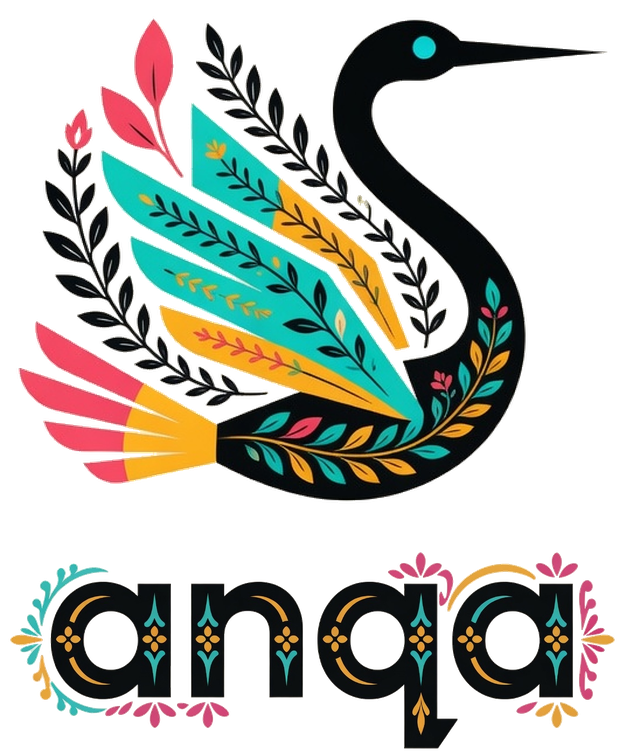
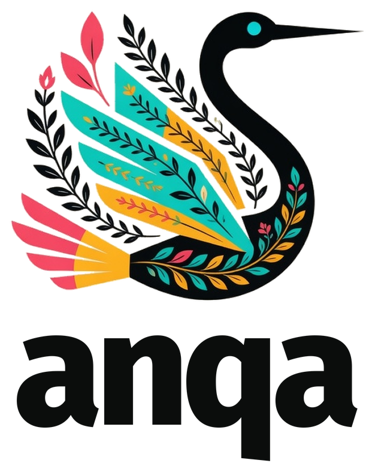
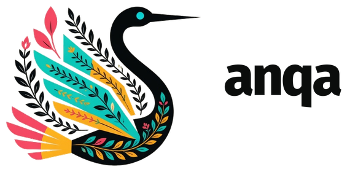
The cyan eye is required. It is the identifier at small sizes. Never fill it with gold or pink. Duo and mono are remaps of the same painting (not a second drawing).
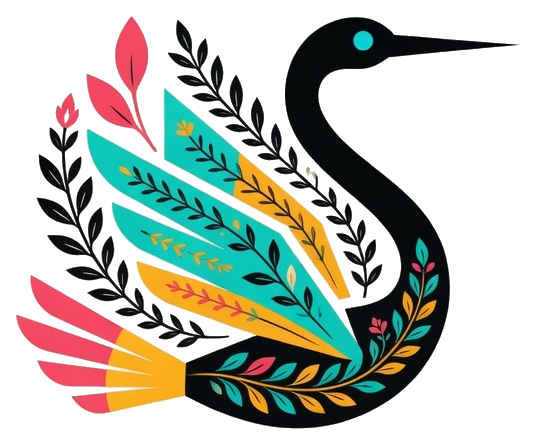
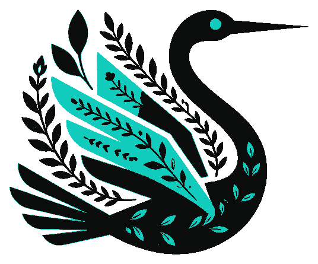
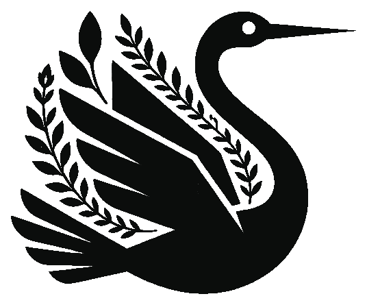
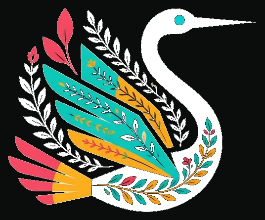
When the name is typeset (clean lockups, UI, docs) the letters are outlined Fira Sans ExtraBold (weight 800), tracking −40 (that is −0.04 em). Do not substitute another face. The decorated word in the stacked lockup is Fira ExtraBold with truck-art floral inlay — master at source/word-ornament.png.
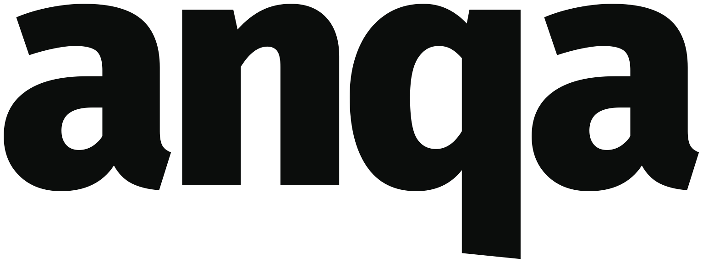
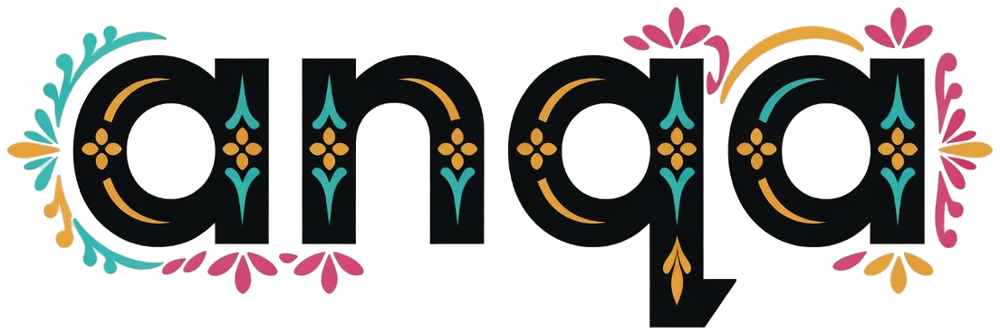
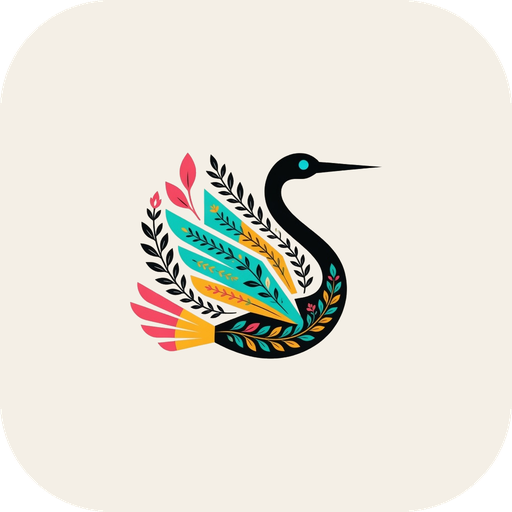
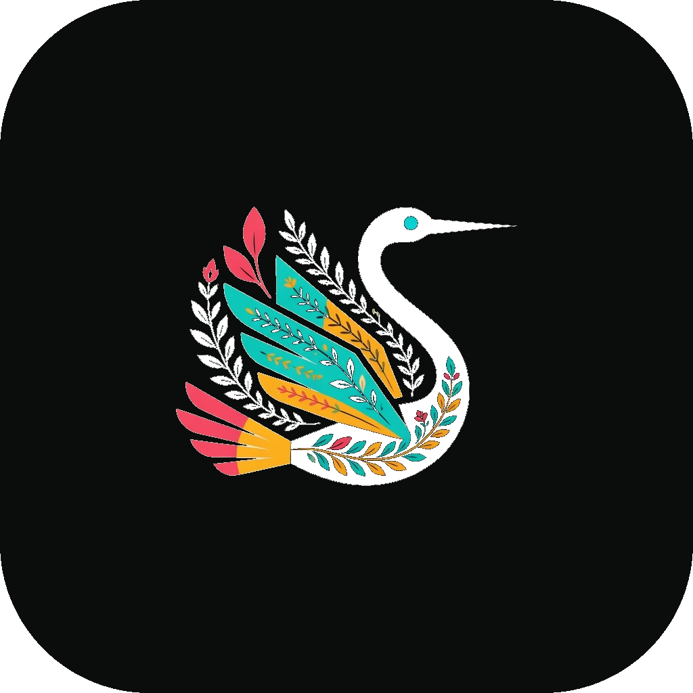
Sampled from the approved truck-art painting, then snapped to even hex. Screen uses hex / sRGB. Print uses the CMYK and Pantone approximations below — proof on paper before a run.
#0B0D0C#11CBBD#F5A81A#F14764#F4EFE6#0E6B64#FFFFFFDuo palette (TUI / HUD chrome when you cannot spare four inks): Ink + Cyan. The eye stays Cyan.
The word anqa in every lockup is Fira Sans ExtraBold, SIL Open Font License 1.1, by Carrois Apostrophe for Mozilla and Telefónica. Files live in fonts/. Do not fake ExtraBold by stroking Regular.
| Role | Face | Weight | Tracking | Case |
|---|---|---|---|---|
| Wordmark | Fira Sans | 800 ExtraBold | −40 (−0.04 em) | lowercase only |
| UI / guidelines / site | Fira Sans | 400 / 500 / 600 | 0 | sentence |
| Code, HUD, hex labels | JetBrains Mono | 400 / 500 | 0 | as written |
Install: fonts/FiraSans-ExtraBold.ttf (and Regular / Medium / SemiBold). License: fonts/OFL.txt. Google Fonts CSS:
https://fonts.googleapis.com/css2?family=Fira+Sans:wght@400;500;600;800&family=JetBrains+Mono:wght@400;500&display=swap
anqa
Fira Sans · 500
JetBrains Mono · anqa serve −d
Clear space on every side equals one eye (the cyan disc). Call that unit E. Nothing (type, rules, other marks) enters that margin.
Digital minima (CSS pixels, mark height):
| Asset | Minimum | Preferred |
|---|---|---|
| Mark only | 24 px | 32 px+ |
| Duo / mono mark | 20 px | 28 px+ |
| Stacked clean | 48 px tall | 72 px+ |
| Stacked with ornaments | 80 px tall | 120 px+ |
| Horizontal | 28 px tall | 40 px+ |
| Wordmark | 18 px cap | 24 px+ |
| App icon | 32 px | 64 px+ |
| Favicon | 16 px | 32 px |
Print minima: mark 8 mm tall; stacked lockup 16 mm; ornaments 24 mm.
| Job | File | Notes |
|---|---|---|
| README, site header | png/anqa-lockup-horizontal.png | cream or white page |
| Poster, sticker, merch | png/anqa-lockup-stacked.png | the painting |
| HUD about / splash | png/anqa-lockup-stacked-clean.png | or mark on Ink |
| macOS / Linux dock, HUD app | png/anqa-app-icon-1024.png | also 512 / 256 |
| Dark dock / dark HUD | png/anqa-app-icon-dark-1024.png | |
| Browser tab | png/anqa-favicon-32.png | also 64 / 16 |
| GitHub social | app icon 512 on Cream | |
| Terminal / one-bit | png/anqa-mark-mono.png | or duo if 256-colour |
| Print 1-colour | mono mark, black on Cream or white | eye knocks out |
| Print 4-colour | colour mark, CMYK as table | proof Cyan on uncoated |
Preferred: Cream, Paper white, Ink. Colour mark may sit on Cyan or Mango only if contrast on the black neck still holds — never on Rose (the tail vanishes). Photography: only quiet, out-of-focus fields; keep full clear space.
anqa/ source/approved.jpg ← master painting (bird) source/word-ornament.png ← decorated Fira word guidelines.html ← this book README.md build.py ← crop, remap, lockups, rasters fonts/ FiraSans-ExtraBold.ttf FiraSans-SemiBold.ttf FiraSans-Medium.ttf FiraSans-Regular.ttf OFL.txt png/ ← usable rasters svg/ ← typeset wordmark + PNG wrappers
Regenerate after replacing the painting or the decorated word: uv run --with fonttools --with numpy --with pillow python build.py.